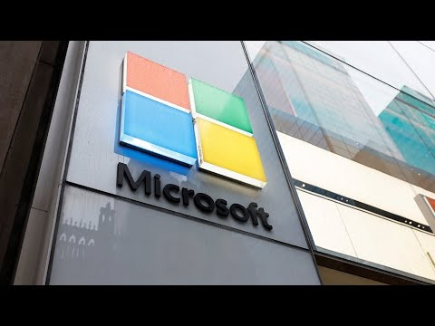

【彭博社 20250703 微软将在第二轮大规模裁员中裁减9000个岗位】
Summary: Microsoft announces plans to cut 9,000 jobs in a second wave of layoffs, restructuring workflows amid rapid growth in coding assistants, while contrasting with Meta's aggressive hiring in AI research.
摘要： 微软宣布计划在第二轮裁员中裁减9000个岗位，在编码助手快速增长的背景下重组工作流程，同时与Meta在AI研究领域的激进招聘形成对比。

⏱️ Estimated Reading Time: 2 min
📚 四级生词 📚 六级生词 📚 雅思生词 📚 托福生词 📚 专八生词 📚 SAT生词 📚 考研生词 📚 GRE生词 📚 高考生词 📚 其它生词生词
We got some breaking news just before you stepped on to set this coming from Microsoft that basically they're going to cut nine thousand workers in a second wave of major layoffs.
我们刚刚收到来自微软的突发新闻，他们将在第二轮大规模裁员中裁减九千名员工。
It seems like Microsoft is really looking to reduce headcount here.
看来微软确实在寻求减少员工数量。
And look I think coding assistant as a tool is now pretty well established.
我认为编码助手作为一种工具现在已经相当成熟。
It's the fastest growing software category this year and every software maker has launched even Google just launched their own coding assistant.
这是今年增长最快的软件类别，每个软件制造商都已推出，甚至谷歌刚刚也推出了自己的编码助手。
So what they're saying is we are not only launching the product we are actually changing the workflows within our organization and companies like Microsoft and Google.
所以他们所说的不仅是要推出产品，实际上还在改变微软和谷歌等公司内部的工作流程。
I mean they have the highest R&D in the spend.
他们的研发支出是最高的。
So a lot of those coders I think are going through this restructuring right now in terms of how their jobs are changing.
因此我认为许多程序员正在经历工作方式改变的重组。
All right.
好吧。
Well the stock I mean it's down in today's pre-market but it's still up 150 percent of the last five years up 16 percent this year.
该股在今日盘前交易中下跌，但过去五年仍上涨了150%，今年上涨了16%。
Obviously they're leading by example here.
显然他们在这里树立了榜样。
Yeah.
是的。
Really outperforming year to date.
今年迄今表现确实出色。
I do think it's interesting to compare and contrast Microsoft which clearly wants to cut workers wants to reduce its headcount to meta for example which is hiring quite aggressively right now and spending almost three billion dollars in those 10 echo hires.
我认为将明显希望裁员和减少员工数量的微软与当前招聘非常激进、在那10个关键招聘上花费近30亿美元的Meta进行对比很有意思。
I mean we're talking about pretty much a sizable acquisition here in terms of bringing those 10 marquee researchers on board.
在引进这10位顶尖研究人员方面，这几乎是一次相当大规模的收购。
And look at that's how I think every big player is going to think about how can I get the smartest people in A.I. to come and join the team and probably offset that with some of the legacy kind of products they had and the spend that they were making on those products.
我认为每个大公司都会这样思考：如何让最聪明的人工智能人才加入团队，并可能用他们已有的传统产品和在这些产品上的支出来抵消。